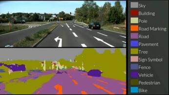
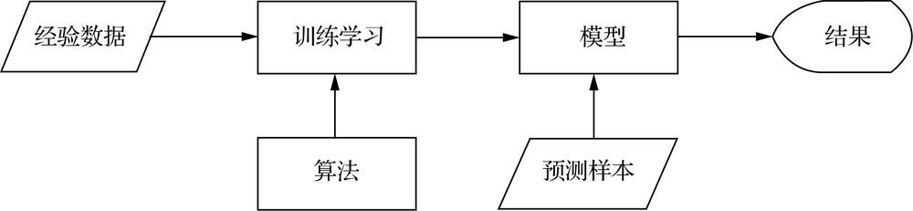
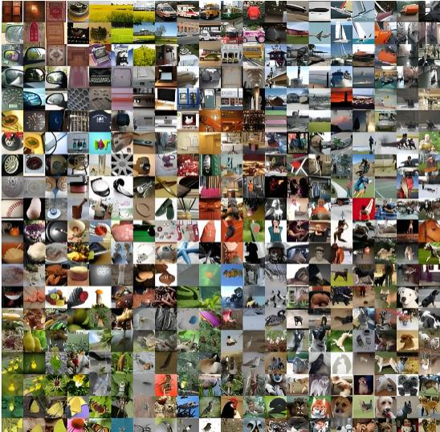
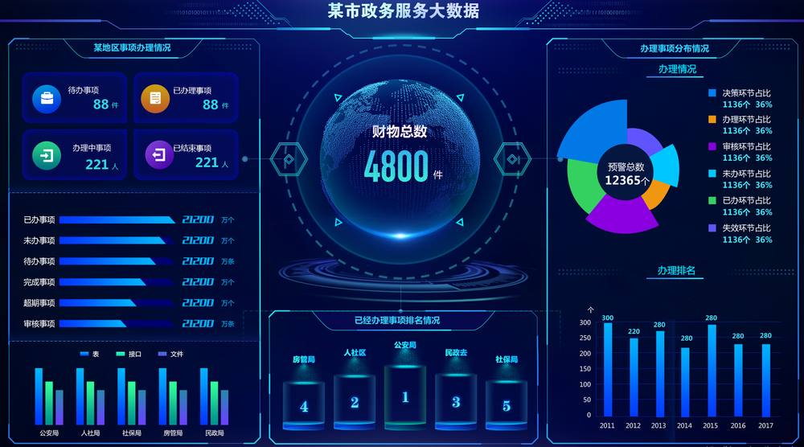
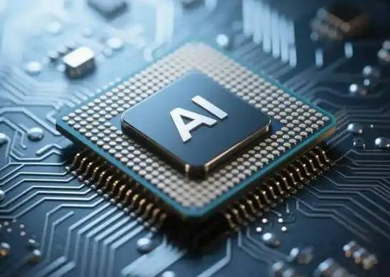
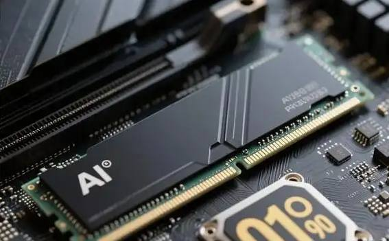
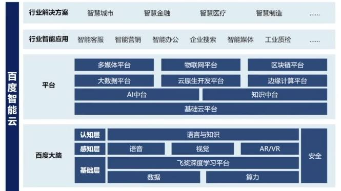

第 1 页 · 1 机器学习简介
1 机器学习简介

模块2：认识机器学习


第 2 页 · 手机美图

手机美图
自动驾驶
视频监控
邮件过滤
个性化营销
路线优化

什么是ML？
第 3 页 · 机器学习的一般流程
机器学习的一般流程
一、机器如何学习

机器学习就是利用经验数据和算法（一种学习方法）来反复训练机器，让它获得处理数据的优化方案（模型），然后机器就可以利用这个模型对新输入的数据进行处理，得到预测结果。
第 4 页 · 机器学习的一般流程
机器学习的一般流程
一、机器如何学习
机器相比人类的学习
第 5 页 · 二、机器学习的三要素
二、机器学习的三要素
1．数据
数据对机器学习的影响
数据质量对机器学习的影响
数据数量对机器学习的影响
数据多样性对机器学习的影响

ImageNet数据集
第 6 页 · 二、机器学习的三要素
二、机器学习的三要素
2．算法
是一套精心设计的、分步执行的计算规则或指令集

算法作用

能、会、促
能分析

会“创造”

促应用

第 7 页 · 二、机器学习的三要素
二、机器学习的三要素
3．算力


算力作用
1 算力是一些模型从理论走向现实的“燃料”
2 算力决定了机器学习的广度与深度
3 算力是人工智能新技术诞生的“试验场”

算力结构
第 8 页 · 二、机器学习的三要素
二、机器学习的三要素
3．算力



算力硬件
第 9 页 · 二、机器学习的三要素
二、机器学习的三要素
3．算力


算力软件

第 10 页 · 二、机器学习的三要素
二、机器学习的三要素
3．算力


算力网络通信
第 11 页 · 影响机器学习的因素
影响机器学习的因素

研讨几大因素对机器学习效果的影响
| 因素 | 有何影响 | 按影响大小排序 | 你的结论 |
| ①数据规模 | |||
| ②数据质量 | |||
| ③算法优劣 | |||
| ④算力大小 | |||
| ⑤训练策略 | |||
| ⑥其它因素 |
第 12 页 · 学生分享及教师点评
学生分享及教师点评

| 分享要点 | 分值 | 计分 | 教师点评 |
| 1、你的结论证据来自哪里？ | 10 | 使用AI工具、独立思考 | |
| 2、你的研讨是否有其他学生参与？ | 10 | 集思广益、团结协助 | |
| 3、因素排序的依据或理由是？ | 30 | 积极思考、善于思考总结 | |
| 4、如果要选择一项对机器学习影响最大的因素，你的选择是？ | 20 | 创新思维、与众不同 | |
| 5、简述未来的机器学习可能是什么样子？ | 20 | 打破常规，展望未来， | |
| 6、其它（含逻辑、表情、主动、清晰、流畅、自信等） | 0-10 | 能说、亲和、善用、精技 |
第 13 页 · 子任务3：语音提示处理
子任务3：语音提示处理

学以致用
应用为王